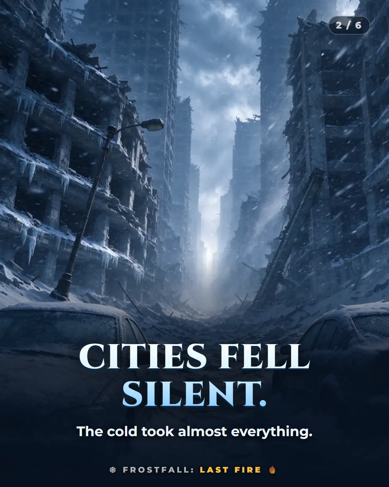
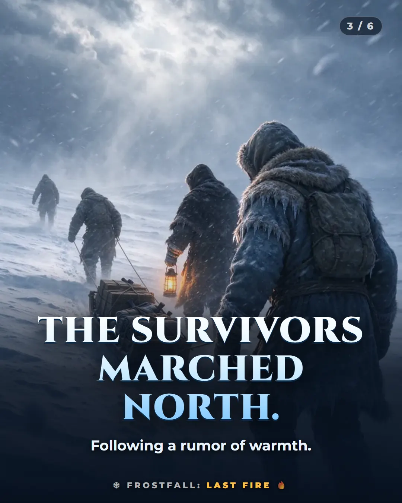
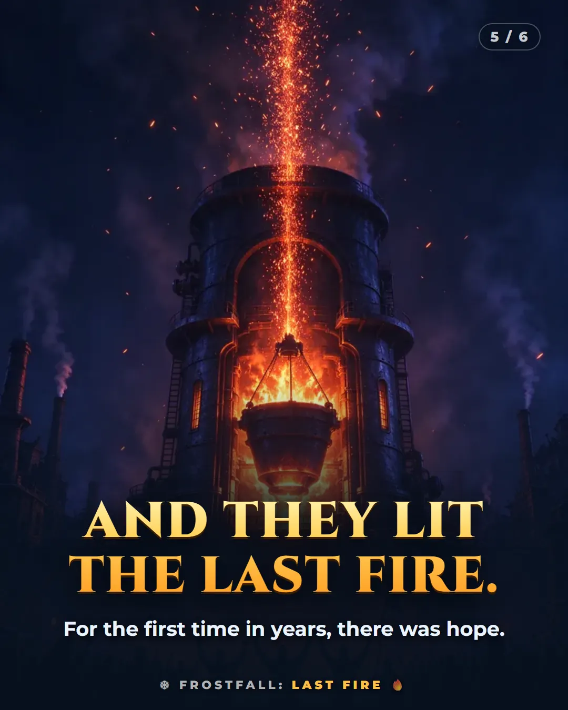

The world froze
In a single night, the sky turned to ice.
In a single night, the sky turned to ice. Cities fell silent. The survivors marched north, following a rumor of warmth — until they found the furnace.
In a single night, the sky turned to ice.

The cold took almost everything.

Following a rumor of warmth.

Ancient. Cold. Waiting.

For the first time in years, there was hope.

Will your city survive the endless winter?